Among the several conclusions we can draw from the even/odd harmonic decomposition of the sawtooth wave (Figure 10.2), one is that a square wave can be decomposed into a linear combination of two sawtooth waves. We can carry this idea further, and show how to compose any classical waveform having only jumps (discontinuities in value) but no corners (discontinuities in slope) as a sum of sawtooth waves of various phases and amplitudes. We then develop the idea further, showing how to generate waveforms with corners (either in addition to, or instead of, jumps) using another elementary waveform we'll call the parabolic wave.
Suppose first that a waveform of period  has discontinuities at 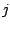
different points,
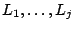, all lying on the cycle between 0 and
has discontinuities at 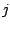
different points,
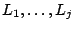, all lying on the cycle between 0 and
 , at which the waveform jumps by values
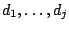. A negative
value of 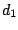, for instance, would mean that the waveform jumps from a higher
to a lower value at the point 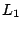, and a positive value of would mean
a jump from a lower to a higher value.
, at which the waveform jumps by values
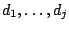. A negative
value of 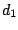, for instance, would mean that the waveform jumps from a higher
to a lower value at the point 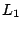, and a positive value of would mean
a jump from a lower to a higher value.
| 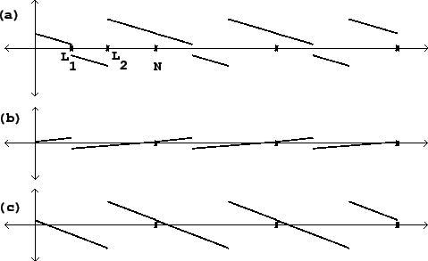 |
For instance, Figure 10.3 (part a) shows a classical waveform with two jumps: 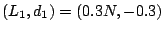 and 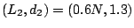. Parts (b) and (c) show sawtooth waves, each with one of the two jumps. The sum of the two sawtooth waves reconstructs the waveform of part (a), except for a possible constant (DC) offset.
The sawtooth wave with a jump of one unit at the point zero is given by
The slopes of the segments of the waveform of part (a) of the figure are all
the same, equal to the sum of the slopes of the component sawtooth waves:
To decompose classical waveforms with corners we use the parabolic wave, which,
over a single period from 0 to  , is equal to
, is equal to
To construct a waveform with any desired number of corners (suppose they are
at the points
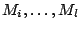, with slope changes equal to
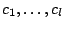), we sum up the necessary parabolic waves:
If the sum  is to contain line segments (not segments of curves), the
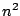 terms in the sum must sum to zero. From the expansion of
is to contain line segments (not segments of curves), the
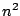 terms in the sum must sum to zero. From the expansion of  above,
this implies that
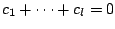. Sums obtained from
existing classical
waveforms (as in the figure) will always satisfy this condition because the
changes in slope, over a cycle, must all add to zero for the waveform to
connect with itself.
above,
this implies that
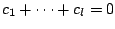. Sums obtained from
existing classical
waveforms (as in the figure) will always satisfy this condition because the
changes in slope, over a cycle, must all add to zero for the waveform to
connect with itself.